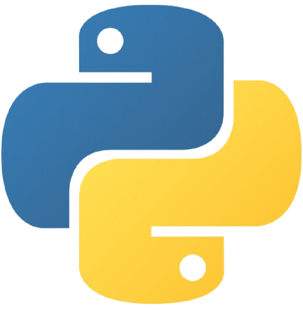
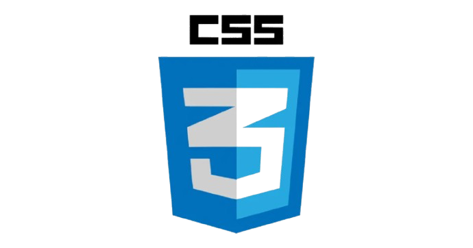

RAPHAËL SAMARAKOON
Actuellement, je suis en BTS SIO au Lycée Turgot à Paris, spécialité informatique. Mon objectif est de devenir administrateur réseau.
Passionné par les technologies de l'information, je développe mes compétences en réseaux et en infrastructures systèmes, afin de construire un avenir professionnel solide et prometteur.
Systèmes
- Installation/configuration des OS et équipements
- Gestion des utilisateurs, des droits d'accès et des fichiers
- Upgrade d'un PC et mise en commun
- Durcissement d'un poste sous environnement Linux
- Passage des certifications (Basic Networking) et MOOC
- Docker (conteneurisation d'environnements Ubuntu)
Réseaux
- Mise en place de réseaux locaux
- Configuration de routeurs et de commutateurs
- Traitement des demandes concernant les services réseau et système
- Certification Basic Networking (Cisco)
- Gestion et vérification de la continuité d'un service informatique
Infrastructures
- Virtualisation Linux, LAMP, WordPress
- Création et gestion de réseaux virtuels
- Déploiement de conteneurs Docker sous Ubuntu
- Gestion de sauvegardes et vérification des habilitations
- Réalisation des tests d'intégration et d'acceptation d'un service
Cybersécurité
- Protection des données personnelles
- Sensibilisation des utilisateurs
- Projet de durcissement d'un poste sous Linux
- Vérification du respect des règles d'utilisation des ressources numériques
- Mise en place et vérification des niveaux d'habilitation associés à un service
Développement Web
- Développement de sites web HTML avec styles CSS et JavaScript
- Sites de commandes en PHP
- Création et gestion de bases de données MySQL
- Participation à l'évolution d'un site web exploitant les données de l'organisation
- Référencement et mesure de visibilité de services en ligne
Programmation & Scripting
- Développement en Python
- Création d'un jeu de dames en Python avec interface Pygame
- Scripting et automatisation sous Linux
- Gestion de bases de données via MySQL
Gestion de projet
- Mise en place de diagrammes de Gantt
- Analyse des objectifs et modalités d'organisation d'un projet
- Planification des activités et suivi des indicateurs
- Projet CEJMA (veille active)
- Mise en place d'une veille informatique via Freeplane


.jpg)
 (1).jpg)